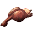
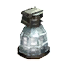

Мозжечок Ящера
Предметы / С врагов
Открыть в интерактивной вики →
| Вес | 5 |
|---|---|
| Цена | 480 |
Описание
Компонент, используемый для изготовления  Первосвященник в Горах Колдов.
Первосвященник в Горах Колдов.

Большая Фляга Знания. Её создаетПервосвященник в Горах Колдов.| Ингредиент для изготовления Большой фляги знания. Изготавливает Первый Жрец в Горах Колдов. |
Дроп
Применение
|
Как добыть
Получаем за победу над:
|